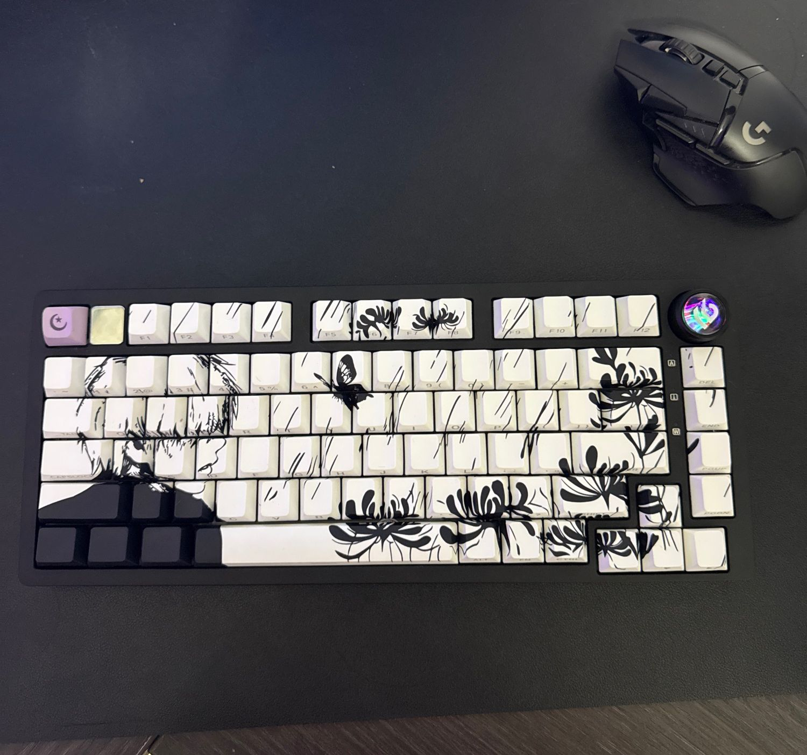

Curriculum Vitae

Estudiante de Ingeniería en Tecnología de Software (2023 - 2028) con pasión por el modding en Java/Kotlin y el hardware. Busco una oportunidad para aplicar mis conocimientos técnicos como desarrollador Junior, analista de ciberseguridad o Practicante.
Software Engineering student (2023 - 2028) with a passion for Java/Kotlin modding and hardware. Seeking an opportunity to apply my technical knowledge as a Junior Developer, Cybersecurity Analyst, or Intern.
Habilidades e IdiomasSkills & Languages
TecnologíasTechnologies
- Java & Kotlin (IntermedioIntermediate)
- Python (básicoBasic)
- HTML, CSS, JavaScript (IntermedioIntermediate)
IdiomasLanguages
- Español:Spanish: NativoNative
- Inglés:English: B2 certificado porcertified by EXCI - 90/100
[Ver Certificado][View Certificate] - Japonés:Japanese: Intermedio (Certificado EF International Language School)Intermediate (EF International Language School Certificate)
Mis ProyectosMy Projects
Mod de Minecraft: Jujutsu Kaisen (2026)Minecraft Mod: Jujutsu Kaisen (2026)
Actualmente programo un mod de Jujutsu Kaisen para Minecraft 1.21.1 desarrollado en Java y Kotlin utilizando el framework de Fabric/Forge.
Currently developing a Jujutsu Kaisen mod for Minecraft 1.21.1 in Java and Kotlin using the Fabric/Forge framework.
Ver en CurseForgeView on CurseForgeInventario HTOWNKICKS (2025)HTOWNKICKS Inventory (2025)
Programé un sistema de inventario con un tracker en tiempo real del precio del dólar para un negocio de compra/venta de tenis (USA). Incluye filtros dinámicos y registro de ventas calculando automáticamente las ganancias por conversión de divisas.
Programmed an inventory system with a real-time USD price tracker for a sneaker trading business (USA). Includes dynamic filters and sales logging, automatically calculating profits from currency conversion.
Mod de Asteroids (2025)Asteroids Mod (2025)
Cree un mod sencillo para Asteroids utilizando netbrains con Java.
Created a simple Asteroids mod using Netbeans with Java.
Curriculum Vitae Web (2024)Web Resume (2024)
Desarrollo de este currículum web utilizando HTML y CSS.
Developed this web resume using HTML and CSS.
EducaciónEducation
Diplomado de Analista de CiberseguridadCybersecurity Analyst Diploma
Facultad De Ingeniería Mecánica y Eléctrica (UANL)Faculty of Mechanical and Electrical Engineering (UANL) | Marzo 2026 - Mayo 2026March 2026 - May 2026
Formación especializada en seguridad informática, análisis de vulnerabilidades y protección de infraestructuras tecnológicas. (actualmente estoy esperando el certificado)
Specialized training in information security, vulnerability analysis, and protection of technological infrastructure. (Currently waiting for certificate)
Facultad De Ingeniería Mecánica y Eléctrica (UANL)Faculty of Mechanical and Electrical Engineering (UANL)
Ingeniería en Tecnología de SoftwareSoftware Engineering | Agosto 2023 - Junio 2028 (Esperado)August 2023 - June 2028 (Expected)

EF International Language School (Tokyo, JapónJapan)
Estudios de Idioma Japonés e Inmersión CulturalJapanese Language Studies and Cultural Immersion | Dic 2024 - Ene 2025Dec 2024 - Jan 2025
Graduado en nivel intermedio-avanzado con promedio final de 90.
Graduated at intermediate-advanced level with a final average of 90.

Experiencia LaboralWork Experience
Piloto de Dron en Obras Públicas - Municipio de GuadalupeDrone Pilot for Public Works - Municipality of Guadalupe
2023 - 2024
Recabación de evidencias fotográficas y de video para la documentación archivística y seguimiento de avances de obra. Demostró alta responsabilidad en el manejo de hardware costoso, control de datos y cumplimiento de tiempos de entrega.
Gathered photographic and video evidence for archival documentation and tracking of construction progress. Demonstrated high responsibility in handling expensive hardware, data control, and meeting delivery deadlines.
Intereses y HobbiesInterests and Hobbies
Deportes y DisciplinaSports and Discipline
Tengo 14 años entrenando Taekwondo (Cinta Negra 3er Dan). Esta disciplina me ha forjado constancia, resiliencia y enfoque a largo plazo. También practico fútbol lo que impacta en mis habilidades de trabajo en equipo y comunicación.
I have been training Taekwondo for 14 years (3rd Dan Black Belt). This discipline has forged consistency, resilience, and long-term focus. I also play soccer, which impacts my teamwork and communication skills.


Tecnología y HardwareTechnology and Hardware
Soy un entusiasta del hardware; en mi tiempo libre disfruto investigando y diseñando teclados custom.
I am a hardware enthusiast; in my free time, I enjoy researching and designing custom keyboards.


IdiomasLanguages
Disfruto mucho aprendiendo nuevos idiomas y culturas, habilidad que fortalecí durante mi estancia en Japón.
I greatly enjoy learning new languages and cultures, a skill I strengthened during my stay in Japan.